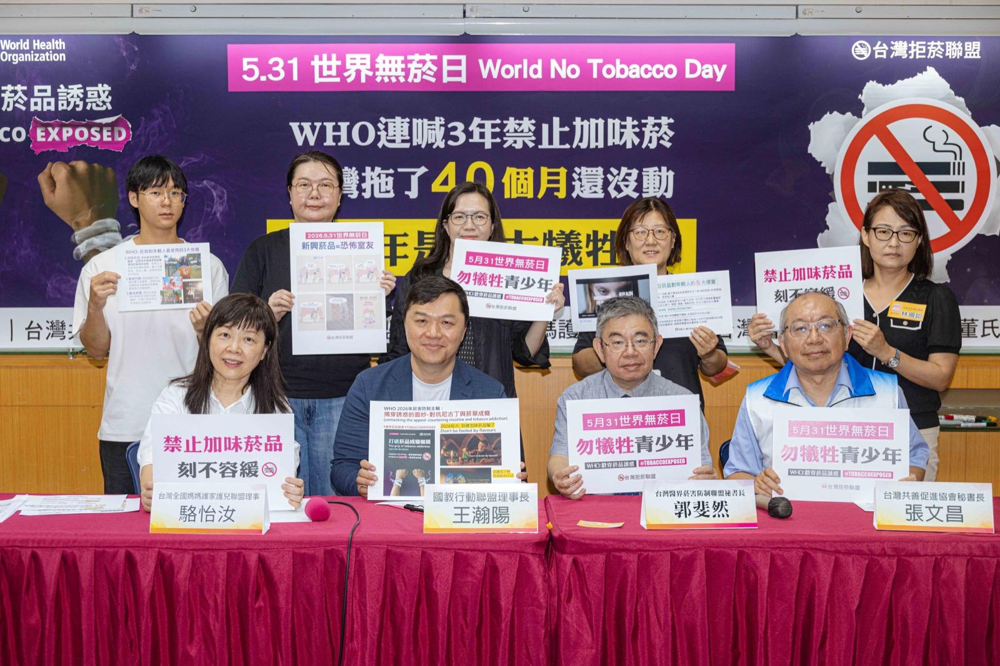
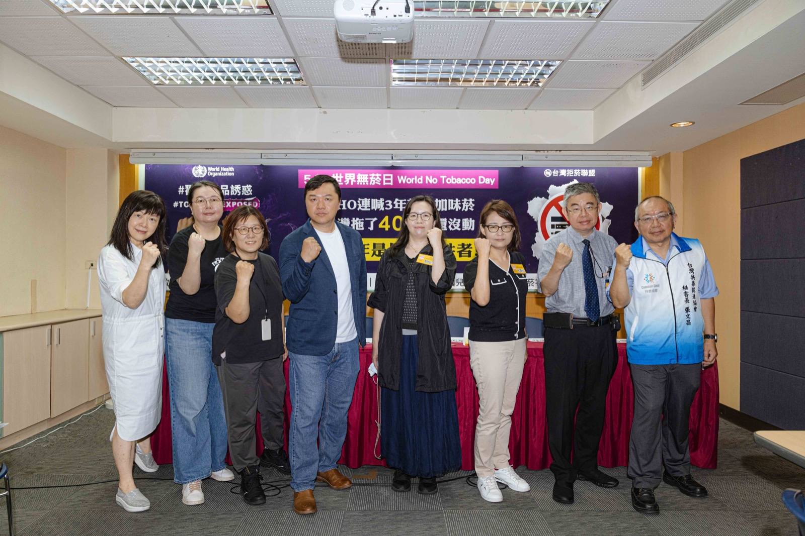

5 月 31 日世界無菸日前夕
家長團體：勿讓青少年成最大犧牲者
WHO 連喊 3 年禁加味菸 台灣卻拖 40 個月還沒做｜衛福部 5/28 啟動電子煙持有罰則修法

WHO 接連三年（2024-2026），都揭露菸品藉著風味添加物，誘惑年輕人上癮，今年更直接推出「別被加味菸品騙了」影片，並把新興菸品比喻為「恐怖室友」，呼籲各國政府為年輕人的健康應盡快「禁止」加味菸品。反觀台灣，自《菸害防制新法》2023 年上路以來，明明已立法，卻拖延超過 40 個月政府遲不公告「禁止菸品使用聞的到、嚐的到的風味添加物」！「台灣拒菸聯盟」呼籲賴總統照顧 0-18 歲的下一代，應先落實影響年輕人健康最深的禁止加味菸品做起。
一、菸害防制法第 10 條與國健署 40 個月時間軸
國教行動聯盟、台灣共善促進協會、全國家長會長聯盟、台灣全國媽媽護家護兒聯盟、董氏基金會、台灣醫界菸害防制聯盟共同說明：
2023 年 1 月 12 日立法院三讀通過《菸害防制法》修正案，其中第 10 條立法意旨明確說明加味菸應予禁止，且在修法過程朝野黨團協商達成「禁止菸草口味以外之加味菸品」決議，同時為因應業者就添加物推陳出新，就依照國健署請求、授權其公告全面禁用之。
結果衛福部國健署於 2023 年 3 月第一次預告僅禁止「花香、果香、巧克力及薄荷」4 種口味，被質疑後表示將再議，拖延 16 個月後，於 2024 年 8 月 8 日再次預告竟將禁「口味添加物」變成「27 種成分」，台灣拒菸聯盟質疑：看似禁止 27 種添加物，但菸商仍可從其餘 1,000 種以上添加物提煉出相同口味，「破口愈補愈大」？國健署以因需搭配後市場監測與檢驗機制作為執法依據，目前積極建置檢測方法與量能……一拖至今 40 個月尚未依法公告「除菸草原味外，禁止所有加味菸品」。

二、醫界、學界、家長代表共同呼籲
「尼古丁是大腦毒素，大部分的人都以為菸害是心血管或肺部與呼吸道的問題，但其實尼古丁直接影響的器官之一就是『大腦』。青少年大腦仍處於快速發育階段，約 25 歲才完全成熟，愈早接觸菸品，就越容易產生依賴、尼古丁成癮。尼古丁會對大腦前額葉皮層中產生神經毒性作用，干擾青少年的認知發展、執行功能和抑制控制能力，影響注意力、學習、情緒和衝動控制，更永久傷害大腦結構與功能。新興菸品以『加味』策略降低戒心，成為青少年接觸菸品『入門磚』。」
「依研究指出（美國 PATH/JAMA 研究，Ambrose 等 2015、Villanti 等 2017），青少年初次使用多類菸品時加味比例高，水菸 89%、電子煙 81%，且使用電子煙的青少年轉為傳統紙菸使用，WHO 官方表述約 3 倍；特定追蹤研究最高達 AOR 8.3。WHO 呼籲各國政策制定者，應盡快禁止菸品使用任何促進吸入的風味（聞的到或嚐的到）成分。國際上，歐盟各國、加拿大及巴西等國家，皆已立法禁止加味菸品。」
「WHO 直接推出『別讓加味菸品騙了』宣導短片，但台灣禁止加味菸政策還掛零情況下，就讓『加味加熱菸上市販售』，菸草產業更是趁機在網路上加強以口味行銷各式新興菸品。此外，依法台灣禁止電子煙、開放少部分通過審查的加熱菸，但各式載具拿在手上根本無法辨識，所以『要嚴格管制新興菸品』根本淪為空談，無疑是對年輕人健康直接補一刀。」
「世界衛生組織（WHO）最新資料顯示，全球不但有 1,500 萬名 13-15 歲青少年使用電子煙，且使用電子煙的青少年轉為吸菸者風險 WHO 官方近 3 倍；個別研究最高約 8 倍。提醒青少年一定要遠離新興菸品。台灣目前已禁止電子煙，若未來推動『無菸世代』，應涵蓋所有已知與可能出現的新興菸品，包括加熱菸、尼古丁袋等，才能真正避免年輕族群接觸成癮物質。」
「面對菸草公司以新武器——新興菸品對全球年輕人魅惑行銷，WHO 接連三年（2024-2026），都直接以『揭穿菸商真面目』為主軸，強調菸草公司以（1）加味菸品（2）魅惑行銷（3）酷炫裝置，吸引及誤導年輕人。今年 WHO 持續使用漫畫跟年輕人對話，並將新興菸品比喻為『恐怖室友』，揭開誘惑的面紗，讓年輕人認清成癮的真相，進而自主打破成癮枷鎖、趕走恐怖室友。」
「近期毒駕事件頻傳，顯示電子煙雖禁止但仍行銷猖獗，尤其是標榜口味齊全吸引年輕人使用。又近期大家討論要設置負壓吸菸室，以避免路上行走的二手菸害，事實上『無菸城市』絕不等於設置「負壓吸菸室」！戶外吸菸區之地點選擇，以遠離建物出入口、主要公共通道及人潮聚集處為原則，係為避免凸顯吸菸人口群聚現象，而使兒童、青少年接觸大量吸菸畫面，提高其觸及菸品之意願，應確保降低其接觸吸菸畫面的機會。」
三、衛福部 5/28 啟動電子煙持有罰則修法（本聯盟立場）
政府最新動作：衛福部 5/28 修法草案送行政院
衛生福利部長石崇良於民國 115 年 5 月 28 日承認現行《菸害防制法》對電子煙「持有」欠缺罰則之漏洞，已將修法草案送行政院審查，重點包括：
（一）將「持有電子煙」納入處罰，罰則新台幣 2,000 至 10,000 元（與「使用」罰則同步）。
（二）可沒入電子煙及其組合元件。
（三）強化網路平台菸害防制違規風險管控機制，平台不可以「開放平台」為由規避責任。
背景：依託咪酯類「喪屍煙彈」毒駕事件頻傳，凸顯持有罰則缺漏問題。
本聯盟肯認衛福部 5/28 修法之政策方向，惟認為仍應同步處理下列三項：
- 加味菸與加味加熱菸下架：依菸害防制法第 10 條原立法意旨，全面禁除菸草原味外之加味菸品。
- 載具空殼、空彈匣、分裝器材之沒入：本聯盟已於 5 月 26 日致行政院、立法院之陳情書〈毒駕載具源頭〉中提出，請貴部於修法草案進一步涵蓋。
- 新興菸品查緝平台：建立衛生福利部新興菸品查緝平台，監控網路加味行銷。
本聯盟認為，衛福部 5/28 修法是「補上一塊」，但若不同步處理「加味」與「載具源頭」，問題會繼續從新破口滋生。誠如國教行動聯盟王瀚陽理事長於本日記者會所說：「各式載具拿在手上根本無法辨識。」
四、彩虹菸：法律分類 ≠ 加味菸，但屬同一魅惑策略
近期彩虹菸事件引起社會關注。本聯盟須說明：彩虹菸常涉及摻入新興毒品（如依託咪酯類），法律上不直接等同合法加味菸品。然其彩色濾嘴／外觀＋特殊氣味＋香菸載具降低青少年戒心之策略，與加味菸、電子煙、加熱菸同屬吸引青少年的魅惑策略——彩色、香甜、降低戒心，這正是菸商行銷青少年共同的劇本。
同樣的鏈條：菸草公司以加味降低戒心 → 青少年首次嘗試 → 部分轉為電子煙使用者 → 電子煙載具被改裝為依託咪酯毒煙彈 → 道路上的毒駕。禁加味菸是源頭預防的第一道防線，是本聯盟 2026 年 5 月 26 日致行政院、立法院陳情書「源頭斷鏈專案」的核心一環。
五、台灣青少年加味菸使用率（國健署 114 年最新）
| 分群 | 114 年最新 | 備註 |
|---|---|---|
| 國中生（整體） | 40.2% | 每 10 個吸菸國中生有 4 個用加味菸 |
| 高中職生（整體） | 49.4% | 每 10 個吸菸高中生有近 5 個用加味菸 |
| 高中職女生 | 61.4% | 過半！加味菸是針對青少女的精準誘惑 |
資料來源：衛生福利部國民健康署 114 年青少年吸菸行為調查（GYTS）。趨勢長期維持四成以上，高中職女生持續過半。
六、台灣拒菸聯盟三大訴求
近期社會討論熱烈 0-18 歲津貼政策，本聯盟呼籲：照顧下一代應先落實影響年輕人健康最深的禁加味菸品政策。建議政府立即做到：
- 依法公告「除菸草原味外，禁止所有加味菸品」、加味加熱菸下架。
- 建立「衛生福利部新興菸品查緝平台」，確實監控新興菸品的魅惑行銷。
- 推動「無菸品世代」（涵蓋電子煙、加熱菸、尼古丁袋等已知與未來新興菸品）。
七、常見問題（FAQ）
什麼是 WHO 2026 世界無菸日主題？
世界衛生組織 2026 年世界無菸日主題為「Unmasking the Appeal — countering nicotine and tobacco addiction」（揭穿誘惑——對抗尼古丁與菸品成癮）。WHO 並於 2025 年 5 月 30 日發布緊急呼籲，要求各國全面禁止所有加味菸草與尼古丁產品，涵蓋紙菸、尼古丁袋、水菸、電子煙等所有形式。
為什麼台灣已立法卻拖延 40 個月？
2023 年 1 月 12 日立法院三讀通過《菸害防制法》修正案，第 10 條明確授權國健署公告禁止加味菸品。國健署 2023 年 3 月第一次預告僅禁 4 種口味，2024 年 8 月 8 日第二次預告改為禁 27 種化學成分，至今 40 個月仍未公告子法。
衛福部 5/28 公布的修法內容是什麼？
衛福部長石崇良 5/28 將修法草案送行政院：將「持有」電子煙納入處罰，罰則新台幣 2,000 至 10,000 元，可沒入電子煙及其組合元件；同時強化網路平台菸害防制違規風險管控義務。本聯盟肯認此一政策方向，並呼籲完整修法亦涵蓋空殼載具、空彈匣、分裝器材及加味加熱菸下架。
台灣青少年使用加味菸的最新數據？
國健署 114 年青少年吸菸行為調查（GYTS）：吸菸國中生 40.2% 使用加味菸、高中職生 49.4%、其中高中職女生高達 61.4%。
國際各國加味菸禁令現況？
歐盟 28 國依《菸品產品指令》2014/40/EU 第 7 條，2016 年起全面禁特徵性風味、2020 年薄荷亦全面禁；加拿大 2018 年 11 月全國禁薄荷菸，涵蓋市場 95%；巴西、英國、衣索比亞皆已立法；美國 FDA 多次提案全面禁薄荷。WHO 2025 年 5 月 30 日已緊急呼籲各國全面禁止所有加味菸草與尼古丁產品。
彩虹菸與加味菸有何關係？
彩虹菸法律上多涉及摻入新興毒品（如依託咪酯類），屬毒品分類，與合法加味菸品的菸防法分類不同。然彩虹菸以彩色濾嘴／外觀、特殊氣味、香菸載具降低青少年戒心，與加味菸、電子煙、加熱菸同屬吸引青少年的魅惑策略。
新聞聯絡人
國教行動聯盟 理事長 王瀚陽 0983-097-165
台灣共善促進協會 秘書長 張文昌 0920-129-684
董氏基金會菸害防制中心 主任 林清麗 0932-191-386
政策知識庫：policy.aabe.org.tw